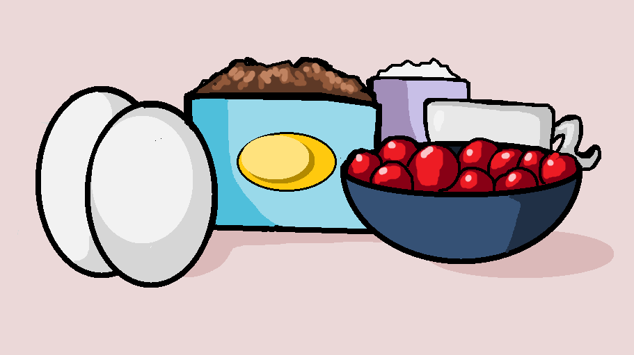

Ingredients
Before starting the recipe, gather all of your ingredients and measure them carefully. Preparing ingredients ahead of time makes the baking process nice and simple, helping prevent mistakes. This is especially beginner friendly because it keeps the recipe organized and easier to follow while baking.

Chocolate Cake Ingredients
- 2 cups all-purpose flour
- 1 ¾ cups sugar
- ¾ cup cocoa powder
- 2 eggs
- 1 cup milk
- ½ cup vegetable oil
- 1 teaspoon vanilla extract
- 1 teaspoon baking powder
Filling Ingredients
- 2 cups heavy whipping cream
- 1 can cherries
- 2 tablespoons powdered sugar
Decoration Ingredients
- Chocolate shavings
- Whole cherries
- Extra whipped cream
Tips
Make sure to use room temperature ingredients whenever possible considering they mix together more evenly. Also check that your whipping cream is cold before using it, otherwise it may stay runny and not form stiff peaks correctly.